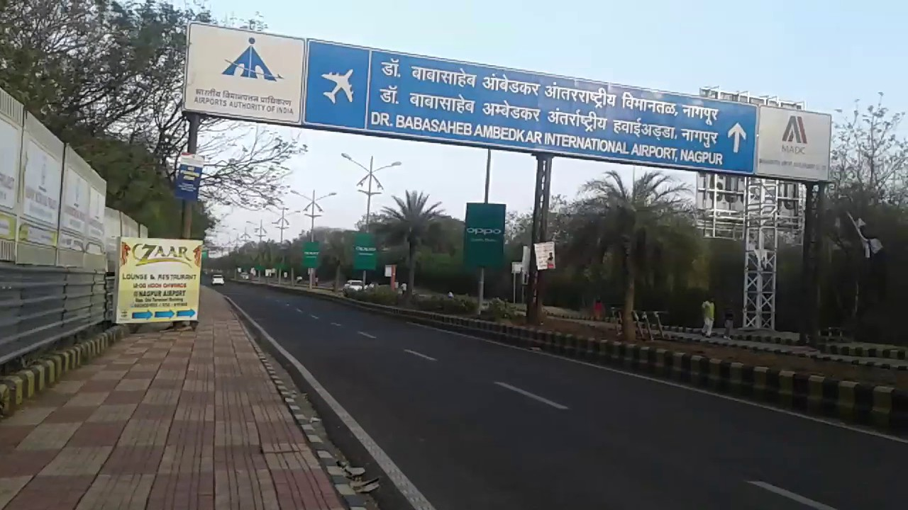

My Nagpur City

"Smart City" – is a popular term nowadays in India. However, is it well understood? The last mile stake holders of a potential smart city i.e the citizens have varied perceptions about the whole concept. Expectations like best of the Urban Infrastructure, Technology and Services at finger tips are being aroused around the buzz created. However, the basic ideas evolve around a single tag line – “Improvement in the quality of Life”. img-- A typical Indian unplanned city has be first planned and then added with services. The planning and adding of services when done smartly, converts the city into a smart city i.e. ‘smartly serviced planned city’. It includes provision of smartly planned services like adequate water supply, hassle free parking, congestion free traffic, efficient lighting, responsive grievance redressal, impactful education & healthcare and possibilities of earning respectable livelihood. As can be observed from precedence of Smart cities around the globe like Amsterdam, Copenhagen, Tel Aviv, Shanghai etc, the common parameter in each of the models is active citizen participation. In fact, the first step towards crafting a smart city is necessarily an intensive Citizen Engagement Program (CEP). Nagpur, with immense potential to explode as a true Smart City has also started to gear up for this process. It is one of few cities, identified by Government of India to have a makeover. Nagpur Municipal Corporation (NMC) as a Principal city planner has been bestowed upon the responsibility to identify the new development layers and align them with a holistic plan. As a first step towards this, NMC has decided to involve the citizens in the whole program right from the day one. It has launched an initiative under the name of "My City – Smart City" with a belief that creative ideas can come up from any quarter of the citizens. NMC is also very optimistic that the ideas thus received can be of immense use to the city planners. In order to facilitate this, a communication platform needs to be formed, wherein citizens can come up and offer their valuable suggestions. To enhance the reach of this communication platform all possible means like – A dedicated website, Social media channels, drop boxes for suggestions in physical forms and a dedicated telephone line would be utilized. The suggestions / ideas can be offered in any form, language, area etc. The openness and non limitation on any parameters of the invitation is designed so as to get maximum participation from every section of the society. There are some basic rules which however need to be understood to present your ideas on the right forum/category. The ideas/ suggestions should fit in the category framework as below:
Dr. Babasaheb Ambedkar International Airport
(Nagpur)
Dr. Babasaheb Ambedkar International Airport NagpurAirport.JPG IATA: NAGICAO: VANP Summary Airport type Public Owner Airports Authority of India Operator Mihan India Private Limited (MIPL) Serves Nagpur Location Sonegaon, Maharashtra, India 440005 Focus city for IndiGo GoAir Elevation AMSL 315 m / 1,033 ft Coordinates 21°05′32″N 79°02′50″ECoordinates: 21°05′32″N 79°02′50″E Map NAG is located in MaharashtraNAGNAG Show map of Maharashtra Show map of India Show all Runways Direction Length Surface m ft 14/32 3,200 10,500 Asphalt Statistics (FY2017-FY2018) Passenger movements 2,118,149 Aircraft movements 15,678 Cargo tonnage 6,398 Source: AAI[1] [2] [3] Dr. Babasaheb Ambedkar International Airport (IATA: NAG, ICAO: VANP) is an international airport serving the city of Nagpur, Maharashtra, India. The airport is located at Sonegaon, 8 km (5 mi) South-West of Nagpur. The airport covers an area of 1355 acres (548 hectares). In 2005, it was named after B. R. Ambedkar, the chief architect of the Indian Constitution.[4] The airport handles around 4,000 passengers per day and caters to five domestic airlines and two international airlines connecting Nagpur to Sharjah, Doha and 12 domestic destinations. The airport spread over 1,460-acres is also home to AFS Nagpur of the Indian Air Force. Growth in passenger traffic is fueled by passengers traveling to and from the state capital Mumbai, over 700 km (378 nmi) away
Dr. Babasaheb Ambedkar International Airport
(Nagpur)



orange city nagpur
orange city nagpur
Orange Is the New Black (sometimes abbreviated to OITNB) is an American comedy-drama web television series created by Jenji Kohan for Netflix.[1][2] The series is based on Piper Kerman's memoir, Orange Is the New201 Black: My Year in a Women's Prison (0), about her experiences at FCI Danbury, a minimum-security federal prison. Orange Is the New Black premiered on July 11, 2013, on the streaming service Netflix; it was the third premiered show produced by Netflix Originals.[3] In February 2016, the series was renewed for a fifth, sixth, and seventh season.[4] The fifth season was released on June 9, 2017.[5] The sixth season was released on July 27, 2018.[6] The series is produced by Tilted Productions in association with Lionsgate Television.